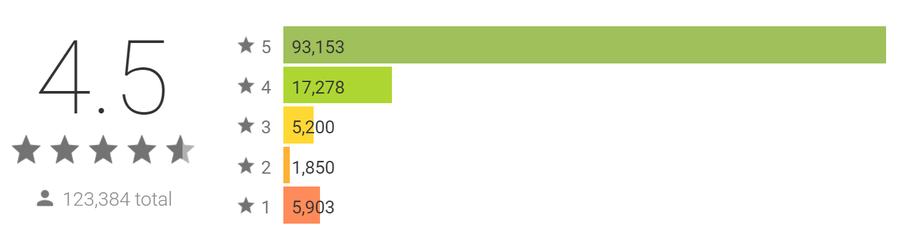
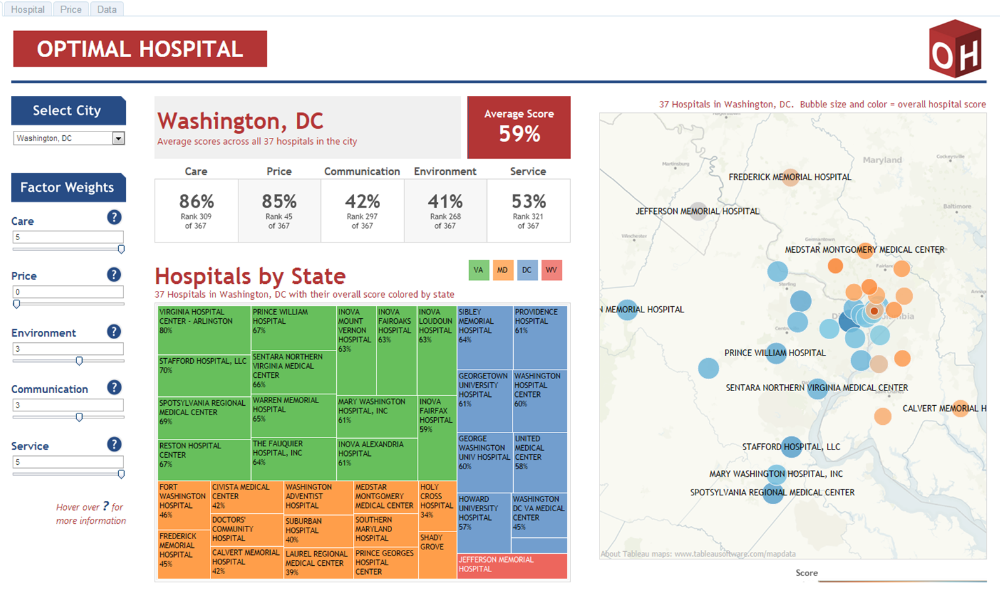
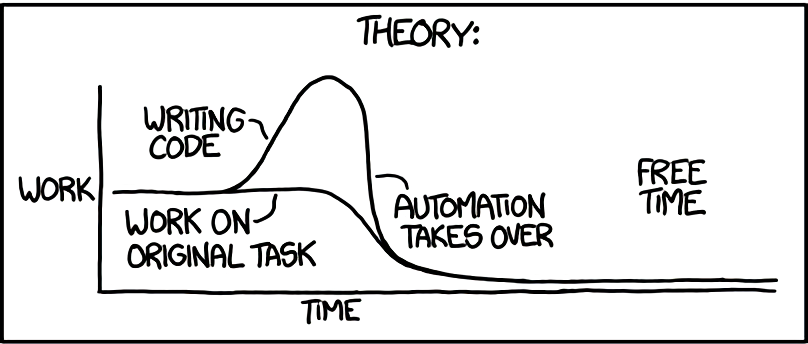
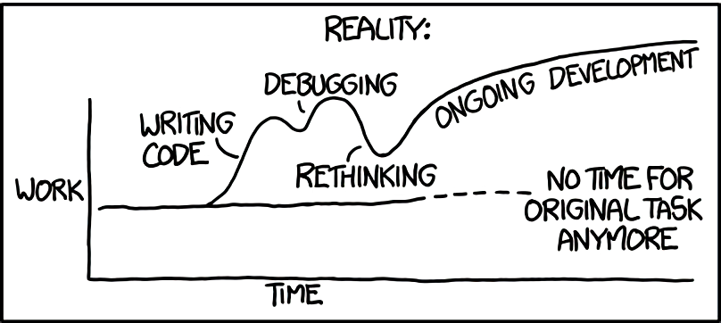

<!doctype html>
<!-- vim: set noet ts=4 sw=4 ai si ci: -->
<html lang="en">

	<head>
		<meta charset="utf-8">

		<title>류원하, &lt;슈판워&gt; 맨땅에서 데이터 분석 시스템 만들어나가기</title>

		<meta name="description" content="&lt;슈퍼 판타지 워&gt;의 런칭과 더불어 데이터 분석 시스템에 대한 요구사항이 생겨났습니다. 이에 맨땅에서 출발해 데이터를 탐색하고 정례화된 보고를 진행할 수 있게 되기까지의 과정에 대해 서사적으로 공유합니다. 사용한 여러 가지 기술 및 제품들에 대한 간략한 소개와 더불어 향후 데이터 분석 시스템을 만들 때, 혹은 만들 수 있도록 하기 위해 고려해야 하는 내용들에 대해 짚습니다. 이 세션을 통해 청중들이 데이터 분석 시스템이 반드시 거대하고, scalable하고, fault-tolerant한 복잡한 기술들로 이루어지지 않더라도, 들이는 비용과 얻는 이득 사이의 트레이드오프가 있는 엔지니어링 문제일 뿐임을 깨닫기를, 또 당장 작은 문제에서부터 시작해볼 수 있는 출발점을 제공하기를, 그리고 신규 프로젝트를 개발하시는 분들께는 분석에 대한 요구사항을 사전에 어느 정도 검토하여 가급적 분석친화적인 의사결정을 이루어나가시기를 희망합니다.">
		<meta name="author" content="Wonha Ryu">

		<meta name="apple-mobile-web-app-capable" content="yes">
		<meta name="apple-mobile-web-app-status-bar-style" content="black-translucent">

		<meta name="viewport" content="width=device-width, initial-scale=1.0, maximum-scale=1.0, user-scalable=no, minimal-ui">

		<!-- Captionss -->
		<link rel="stylesheet" href="captionss/captionss.min.css">

		<link rel="stylesheet" href="css/reveal.css">
		<link rel="stylesheet" href="css/theme/black-ko.css" id="theme">

		<!-- Code syntax highlighting -->
		<link rel="stylesheet" href="lib/css/zenburn.css">

		<!-- Printing and PDF exports -->
		<script>
			var link = document.createElement( 'link' );
			link.rel = 'stylesheet';
			link.type = 'text/css';
			link.href = window.location.search.match( /print-pdf/gi ) ? 'css/print/pdf.css' : 'css/print/paper.css';
			document.getElementsByTagName( 'head' )[0].appendChild( link );
		</script>

		<style type="text/css">
.title-slide { text-align: left; }

.title { font-size: 90px !important; }
.subtitle { font-size: 50px !important; }
.author-org { font-size: 35px !important; }
.author { font-size: 60px !important; }

.reveal pre code { font-size: 160%; line-height: 1.2; }
		</style>

		<!--[if lt IE 9]>
		<script src="lib/js/html5shiv.js"></script>
		<![endif]-->
	</head>

	<body>

		<div class="reveal">

			<!-- Any section element inside of this container is displayed as a slide -->
			<div class="slides">
				<section data-markdown data-background="assets/intro-gt.png" data-background-color="black" class="dark title-slide" data-background-size="contain" data-time-seconds="40">
					<script type="text/template">
<div style="min-height: 10%;">&nbsp;</div>
<h1 class="title">&lt;슈판워&gt; 맨땅에서 데이터 분석 시스템 만들어나가기</h1>
<h3 class="subtitle">내가 그를 적재하기 전에는 그는 다만 하나의 레코드에 지나지 않았다<br>
내가 그를 변환했을 때 그는 나에게로 와서 정보가 되었다</h3>

---

<h3 class="author-org">넥슨지티 창조기술팀</h3>
<h2 class="author">류원하 (wonha.ryu@nexon-gt.com)</h2>

<!-- .element: style="color: cyan;" --> 2016년 4월 26일 NDC 2016에서 발표

<!-- .element: style="color: cyan;" --> Spacebar / Shift+Spacebar를 통해 조작하세요 (자세한 조작은 ?키로 확인)
					</script>
				</section>

				<section>
					<section data-markdown data-background="assets/subtitle-gt.png" class="dark" data-background-color="black" data-background-size="contain" data-time-seconds="10">
						<script type="text/template">
## 소개

### 우린 누군가 또 무슨 이야기를 하려 하는가
						</script>
					</section>

					<section data-markdown data-background="assets/body-gt.png" data-background-size="contain" data-time-seconds="25">
						<script type="text/template">
## &lt;슈퍼 판타지 워&gt;


<div style="display: flex; align-items: center; justify-content: space-around;">
	<div style="flex: 1; padding: 0 5% 0 0;">
		
	</div>
	<div style="flex: 1; padding: 0 0 0 5%;">
		
	</div>
</div>

* 넥슨지티 자체 개발 세 번째 모바일 타이틀
* 턴 방식 SRPG
* Unity, Node.js, MySQL
						</script>
					</section>

					<section data-markdown data-background="assets/body-gt.png" data-background-size="contain" data-time-seconds="25">
						<script type="text/template">
## 창조기술팀


<!-- .element: class="fragment" data-fragment-index="1" --> a.k.a. 해결사들
						</script>
					</section>

					<section data-markdown data-background="assets/body-gt.png" id="team-intro" data-background-size="contain" data-time-seconds="45">
						<script type="text/template">
> <!-- .element: style="border: 0.1em solid black; font-style: normal; text-align: left; padding: 0.5em;" -->
> &hellip; 창조기술팀에서는 여러 게임 개발 프로젝트에서 겪고 있는 &hellip; <span class="fragment highlight-red">다양한 문제해결</span>을 진행하며 그에 필요한 <span class="fragment highlight-red">기반기술을 연구개발, 적용</span>하는 일을 하고 있습니다. &hellip;
> 
> 업무 범위에 제한은 없으나, 최근에 진행하였던 업무의 예는 다음과 같습니다. 
> 
> * <!-- .element: class="fragment highlight-red" -->빅데이터 규모의 로그 및 DB 데이터 수집 가공, 분석 활용 시스템 개발
> * 게임 개발 프로젝트의 기술 스택에 대한 관리 및 기술적 의사결정 참여 
> * 개발 지식의 정리, 보존, 공유 

<small>(채용공고 발췌)</small>
						</script>
					</section>

					<section data-markdown data-background="assets/body-gt.png" data-background-size="contain" data-time-seconds="40">
						<script type="text/template">
## 목차

1. <!-- .element: class="fragment" -->계기
1. <!-- .element: class="fragment" -->(반복 시작) 어떤 상황이었나요?
1. <!-- .element: class="fragment" -->어떻게 했나요? (반복 끝)
1. <!-- .element: class="fragment" -->이것이 미래세계다
1. <!-- .element: class="fragment" -->회고

<!-- .element: class="fragment" -->참고: 기술 세션이며, 게임에 대한 데이터나 정보는 다루지 않습니다.
						</script>
					</section>
				</section>

				<section>
					<section data-markdown data-background="assets/subtitle-gt.png" class="dark" data-background-color="black" data-background-size="contain" data-time-seconds="10">
						<script type="text/template">
## 계기
						</script>
					</section>

					<section data-markdown data-background="assets/sfw-global-launch.jpg" data-background-size="contain" style="background: rgba(255, 255, 255, 0.85)" data-time-seconds="15">
						<script type="text/template">
## 글로벌 동시 런칭

2015년 11월 5일! <small>사실 소프트런칭을 하긴 했지만</small>
						</script>
					</section>

					<section data-markdown data-background="assets/body-gt.png" data-background-size="contain" data-time-seconds="40">
						<script type="text/template">
## 흔한 프로젝트의 작업 우선순위

1. <!-- .element: class="fragment" -->컨텐츠 구현
1. <!-- .element: class="fragment" -->버그픽스
1. <!-- .element: class="fragment" -->컨텐츠 구현
1. <!-- .element: class="fragment" -->컨텐츠 구현
1. <!-- .element: class="fragment" -->버그픽스
1. <!-- .element: class="fragment" style="margin-bottom: 1em;"-->&hellip;&hellip;.
1. <!-- .element: class="fragment" value="42" -->사후 분석을 위한 설계 및 기능 구현
						</script>
					</section>

					<section data-markdown data-background="assets/body-gt.png" data-background-size="contain" data-time-seconds="60">
						<script type="text/template">
## 출시 이후엔 데이터가 보고 싶어진다

* <!-- .element: class="fragment" -->유저들의 컨텐츠 소비 속도 파악
* <!-- .element: class="fragment" -->각종 커스텀 지표
* <!-- .element: class="fragment" -->어뷰징 대응
* <!-- .element: class="fragment" -->"Data Exploration"

<!-- .element: class="fragment" --> 하지만 개발팀은 당연히 그럴 여유가 없다
						</script>
					</section>

					<section data-markdown data-background="assets/body-gt.png" data-background-size="contain" data-time-seconds="15">
						<script type="text/template">
## 창조기술팀 출동

네 그럼 저희가 분석할 수 있게 도와드리죠! <small>믿음직</small>


<small>팀 로고 갖고 싶어요&hellip;</small>
						</script>
					</section>
				</section>


				<section>
					<section data-markdown data-background="assets/subtitle-gt.png" class="dark" data-background-color="black" data-background-size="contain" data-time-seconds="15">
						<script type="text/template">
## 어떤 상황이었나요?

### 첫 번째 시도에 대하여
						</script>
					</section>

					<section data-markdown data-background="assets/body-gt.png" data-background-size="contain" data-time-seconds="30">
						<script type="text/template">
## DB! DB를 보자!
						


* 정형 데이터베이스
* 정형 로그 &rarr; RDBMS에 곱게 보관
* 간단할 것으로 예상 <small>쿼리 몇 개만 잘 짜면 되겠지</small>
						</script>
					</section>

					<section data-markdown data-background="assets/body-gt.png" data-background-size="contain" data-time-seconds="50">
						<script type="text/template">
## 이건&hellip; 수평분할을 하는 맛이다

<div style="display: flex; align-items: stretch; justify-content: space-around;">
	<div style="flex: 1; border-right: 0.1em solid black">
		<h4>Global DB</h4>
		
		<table class="fragment" data-fragment-index="1">
			<thead>
				<tr><th>UID</th><th>GDB ID</th><th>LDB ID</th></tr>
			</thead>
			<tbody>
				<tr><td>0</td><td>0</td><td>0</td></tr>
				<tr><td>1</td><td>1</td><td>1</td></tr>
				<tr><td>2</td><td>2</td><td>0</td></tr>
				<tr><td>3</td><td>0</td><td>1</td></tr>
			</tbody>
		</table>
	</div>
	<div style="flex: 1; border-left: 0.1em solid black; border-right: 0.1em solid black;">
		<h4>Game DB</h4>
			GDB 0: <br>
			<span class="fragment" data-fragment-index="1">GDB 1: <br></span>
			<span class="fragment" data-fragment-index="1">GDB 2: </span>
	</div>
	<div style="flex: 1; border-left: 0.1em solid black;">
		<h4>Log DB</h4>
			LDB 0: <br>
			<span class="fragment" data-fragment-index="1">LDB 1: </span>
	</div>
</div>
						</script>
					</section>

					<section data-markdown data-background="assets/facepalm.jpg" data-background-size="contain" data-time-seconds="25">
						<script type="text/template">
### <!-- .element: style="margin-top: 25%;" --> <span style="background: rgba(255, 255, 255, 0.7); padding: 0.5em;">어 그럼 조인이 안되겠네?? <small>N &times; M</small></span>

<figcaption style="margin-top: 5%;"><span style="background: rgba(255, 255, 255, 0.7); padding: 0.2em;">Video courtesy of <em>Star Trek the Next Generation</em></span></figcaption>
						</script>
					</section>

					<section data-markdown data-background="assets/body-gt.png" data-background-size="contain" data-time-seconds="20">
						<script type="text/template">
## 글로벌 동시 런칭&hellip;?

### <!-- .element: data-fragment-index="1" class="fragment" --> 설상가상

<div style="display: flex; align-items: stretch; justify-content: space-around;" class="fragment" data-fragment-index="1">
	<div style="flex: 1; border-right: 0.1em solid black">
		<h4>한국 서버</h4>
		
		
		
		
		
		&hellip;
	</div>
	<div style="flex: 1; border-left: 0.1em solid black; border-right: 0.1em solid black;">
		<h4>아시아 서버</h4>
		
		
		
		
		
		&hellip;
	</div>
	<div style="flex: 1; border-left: 0.1em solid black; border-right: 0.1em solid black;">
		<h4>글로벌 서버</h4>
		
		
		
		
		
		&hellip;
	</div>
	<div style="flex: 1; border-left: 0.1em solid black">
		<h4>개척자 서버</h4>
		
		
		
		
		&hellip;
	</div>
</div>
						</script>
					</section>

					<section data-markdown data-background-video="assets/facepalm2.webm" data-background-video-loop data-background-video-autoplay data-background-size="stretch" data-time-seconds="20">
						<script type="text/template">
### <!-- .element: style="margin-top: 25%;" --> <span style="background: rgba(255, 255, 255, 0.7); padding: 0.5em;">어쩌면 좋지&hellip; <small>N &times; M &times; K</small></span>

<figcaption style="margin-top: 5%;"><span style="background: rgba(255, 255, 255, 0.7); padding: 0.2em;">Video courtesy of <em>Star Trek the Next Generation</em></span></figcaption>
						</script>
					</section>
				</section>

				<section>
					<section data-markdown data-background="assets/subtitle-gt.png" class="dark" data-background-color="black" data-background-size="contain" data-time-seconds="10">
						<script type="text/template">
## 어떻게 했나요?

### 첫 번째 시도
						</script>
					</section>

					<section data-markdown data-background="assets/body-gt.png" data-background-size="contain" data-time-seconds="30">
						<script type="text/template">
## One Instance to Rule Them All


<div style="display: flex; align-items: stretch; justify-content: space-around;">
	<div style="flex: 1; border-right: 0.1em solid black">
		<h4>한국 서버</h4>
		
		
		
		
		
		&hellip;
	</div>
	<div style="flex: 1; border-left: 0.1em solid black; border-right: 0.1em solid black;">
		<h4>아시아 서버</h4>
		
		
		
		
		
		&hellip;
	</div>
	<div style="flex: 1; border-left: 0.1em solid black; border-right: 0.1em solid black;">
		<h4>글로벌 서버</h4>
		
		
		
		
		
		&hellip;
	</div>
	<div style="flex: 1; border-left: 0.1em solid black">
		<h4>개척자 서버</h4>
		
		
		
		
		&hellip;
	</div>
</div>

<del>MySQL들아 내게 힘을 모아줘</del>

&dArr;


						</script>
					</section>

					<section data-markdown data-background="assets/body-gt.png" data-background-size="contain" data-time-seconds="30">
						<script type="text/template">
## 맞는 방향인지 의심스럽다

* 가진 건 full snapshot backup뿐
* EC2 한 인스턴스에 `mysqld_multi`로 DB 인스턴스 14개 생성
* 제대로 가고 있는 거 맞나&hellip;
						</script>
					</section>

					<section data-markdown data-background-video="assets/sl.webm" data-background-video-loop data-background-video-autoplay data-background-size="stretch" data-background-color="black" data-time-seconds="70">
						<script type="text/template">
## <!-- .element: style="margin-bottom: 40%;" --> <span style="background: rgba(255, 255, 255, 0.8); padding: 0.5em;">끝나지 않는 복원 작업</span>

<span style="background: rgba(255, 255, 255, 0.8); padding: 0.5em;">14 &times; (압축 해제 + 복원 + 고유 ID 변경<small>캐릭터, 장비 ID</small> + 내보내기 + 불러오기)</span>
						</script>
					</section>

					<section data-markdown data-background="assets/body-gt.png" data-background-size="contain" data-time-seconds="20">
						<script type="text/template">
## 분석은 할 수 있기는 했다

어쨌든 쿼리는 날릴 수 있으니까&hellip;
						</script>
					</section>
				</section>


				<section>
					<section data-markdown data-background="assets/subtitle-gt.png" class="dark" data-background-color="black" data-background-size="contain" data-time-seconds="10">
						<script type="text/template">
## 왜 잘 안됐나요?

### 첫 번째 시도에 대하여
						</script>
					</section>

					<section data-markdown data-background="assets/body-gt.png" data-background-size="contain" data-time-seconds="40">
						<script type="text/template">
## 복원하는 데 며칠 걸렸을까요?

### <!-- .element: class="fragment" -->&asymp; 4일!

* <!-- .element: class="fragment" -->그제서야 데이터를 적재했을 뿐, 아무런 분석도 하지 못한 상태 <small>인덱스도 별로 없는데&hellip;</small>
* <!-- .element: class="fragment" -->정보에는 유통기한이 있다
	* 런칭 직후일수록 더더욱 중요
						</script>
					</section>

					<section data-markdown data-background="assets/body-gt.png" data-background-size="contain" data-time-seconds="80">
						<script type="text/template">
<div style="border: 0.1em solid black; width: 50%; padding: 0.5em; margin: 0 auto;">
<h3>제가 수를 세는 법</h3>
<p><span class="fragment">0개<span class="fragment">, 1개<span class="fragment">, 2개<span class="fragment">, 많다<small><del>ㅋㄲㅈㅁ</del></small></span></span></span></span></span></p>
</div>

## <!-- .element: class="fragment" style="color: red;" --> 이건 두 번도 못해 안돼

* <!-- .element: class="fragment" -->멘탈에도 극도로 안 좋았고, 시간도 많이 썼다
	* 창조기술팀 모토: "우리의 멘탈은 비싼 자원이다"
* <!-- .element: class="fragment" -->이걸 일별로 증분적으로 할 수 있을까?
	* 쌓이는 속도?
	* DB 크기? <small>이미 꽤 컸음</small>
* <!-- .element: class="fragment" -->기껏 분할한 걸 다시 합치다니?
* <!-- .element: class="fragment" -->나는 누군가 여긴 또 어딘가
						</script>
					</section>

					<section data-markdown data-background="assets/body-gt.png" data-background-size="contain" data-time-seconds="20">
						<script type="text/template">
## 이렇게 된 이상 Spark로 간다

배운 게 도둑질입니다

> <!-- .element: class="fragment" style="border: 0.1em solid black; font-style: normal; text-align: left; padding: 0.5em;" -->
> 누구나 자신의 능력과 경험을 바탕으로 문제를 풀 뿐입니다.<br>
> <div class="fragment" style="text-align: right;">&mdash; 류원하</div>
						</script>
					</section>
				</section>

				<section>
					<section data-markdown data-background="assets/subtitle-gt.png" class="dark" data-background-color="black" data-background-size="contain" data-time-seconds="10">
						<script type="text/template">
## 어떻게 했나요?

### 좌충우돌 Spark 분투기
						</script>
					</section>

					<section data-markdown data-background="assets/body-gt.png" data-background-size="contain" data-time-seconds="20">
						<script type="text/template">
## 일단 다 가져와서 저장해보자

Spark &#10084; Parquet
						</script>
					</section>

					<section data-markdown data-background="assets/subtitle-gt.png" class="dark" data-background-color="black" data-background-size="contain" data-time-seconds="15">
						<script type="text/template">
## 오르막 주의


### "빅 데이터" 생태계 이야기&hellip;
						</script>
					</section>

					<section data-markdown data-background="assets/body-gt.png" data-background-size="contain" data-time-seconds="10">
						<script type="text/template">
## 

> <!-- .element: style="border: 0.1em solid black; font-style: normal; text-align: left; padding: 0.5em;" -->
> Apache Spark™ is a fast and general engine for large-scale data processing.

<br>
						</script>
					</section>

					<section data-markdown data-background="assets/body-gt.png" data-background-size="contain" data-time-seconds="80">
						<script type="text/template">
## Apache Spark (cont.)

* 컴퓨팅 프레임워크: MR의 대체재?
* Scala/JVM 기반 <small>PySpark도 있음</small>
* 핵심 개념: "Resilient Distributed Datasets" (RDD)
	* In-memory, DAG-based computing

``` scala
val lines = sc.textFile("data.txt")
val lineLengths = lines.map(s => s.length)
val totalLength = lineLengths.reduce((a, b) => a + b)
```
						</script>
					</section>

					<section data-markdown data-background="assets/body-gt.png" data-background-size="contain" data-time-seconds="100">
						<script type="text/template">
## Spark SQL

* Pig Latin, HiveQL처럼 구조화된 데이터를 편리하게 다루기
* `DataFrame`<small>`Row` 기반 런타임 조작</small> &amp; `Dataset`<small>1.6에 나온 새 API; Strongly typed</small>
* 강력한 쿼리 엔진: Catalyst + Plan 최적화 엔진
	* Predicate pushdown, Bytecode compilation 등

``` scala
val df = context.read.format("json").load("s3n://...")
df.registerTempTable("people")
val names = context.sql("SELECT name FROM people WHERE age >= 42")
val names = df.where("age >= 42").select("name") // this works too
names.write.format("parquet").save("s3n://.../names.parquet")
```
						</script>
					</section>

					<section data-markdown data-background="assets/body-gt.png" data-background-size="contain" data-time-seconds="50">
						<script type="text/template">
## <br>

> <!-- .element: style="border: 0.1em solid black; font-style: normal; text-align: left; padding: 0.5em;" -->
> Apache Parquet is a <span style="color: red">columnar storage format</span> available to any project in the Hadoop ecosystem, regardless of the choice of data processing framework, data model or programming language.

* ORC와 유사한 열 단위로 저장하는 파일 규격
* 단순한 타입 몇 개와 blob, 그리고 중첩 구조
* 인코딩과 압축 지원
						</script>
					</section>

					<section data-markdown data-background="assets/body-gt.png" data-background-size="contain" data-time-seconds="70">
						<script type="text/template">
## Spark + Parquet

```
// Sample DataFrame schema
root
 |-- idx: long (nullable = true)
 |-- reg_date: timestamp (nullable = true)
 |-- user_idx: long (nullable = true)
 |-- action_type: integer (nullable = true)
 ...
```

* 모든 로그를 가져다가 Parquet으로 저장 <small>직접 구현했으나 Apache Sqoop도 있습니다</small>
* 인덱싱 X, 압축 O &rarr; 그럭저럭 작아진 용량
* 데이터가 작으니 로컬 파일시스템에 저장합시다 <small>S3/EMRFS는 일단 보류</small>
	* Hive 스타일 파티셔닝: `user_part=42/time_ym=201604/time_d=26/*.parquet`
	* 적당한 데이터 리텐션 정책
						</script>
					</section>

					<section data-markdown data-background="assets/body-gt.png" data-background-size="contain" data-time-seconds="60">
						<script type="text/template">
## 그 파일이 개발자가 보기에 좋았노라

`spark-shell`: Spark-powered Scala REPL Shell

<pre><code data-trim data-noescape style="font-size: 140%; max-height: none; background: #3f3f3f; color: #dcdcdc;" class="nohighlight">
<span class="hljs-comment">scala&gt;</span> val df = sqlContext.read.parquet(<span class="hljs-string">".../log_pvp/gl"</span>)
df: <span class="hljs-type">org.apache.spark.sql.DataFrame</span> = [lord_idx: bigint, ...]
<span class="hljs-comment">scala&gt;</span> df.registerTempTable(<span class="hljs-string">"pvp"</span>)
<span class="hljs-comment">scala&gt;</span> val win_df = sqlContext.sql(
	<span class="hljs-string">"SELECT lord_idx, SUM(is_win) AS win_count FROM pvp</span>
	 <span class="hljs-string">WHERE time_ym = 201604 AND time_d = 26 AND is_win = 1</span>
	 <span class="hljs-string">GROUP BY lord_idx"</span>)
win_df: <span class="hljs-type">org.apache.spark.sql.DataFrame</span> = [lord_idx: bigint, win_count: bigint]
<span class="hljs-comment">scala&gt;</span> win_df.sort($<span class="hljs-string">"win_count"</span>.desc).limit(10).collect()
res1: <span class="hljs-type">Array[org.apache.spark.sql.Row]</span> = Array([12345, 42], [23456, 41], ...)
</code></pre>
						</script>
					</section>
				</section>


				<section>
					<section data-markdown data-background="assets/subtitle-gt.png" class="dark" data-background-color="black" data-background-size="contain" data-time-seconds="10">
						<script type="text/template">
## 그런데, 왜 잘 안됐나요?
						</script>
					</section>

					<section data-markdown data-background="assets/body-gt.png" data-background-size="contain" data-time-seconds="40">
						<script type="text/template">
## 분석 병목: 데이터 엔지니어

* Spark SQL &ne; SQL
* 시스템에 대한 이해 없이 접근 불가능한 자료들
* 데이터 엔지니어가<small>접니다</small> 그때그때 요구사항에 맞춰 데이터를 받아 내려주는 흐름
						</script>
					</section>

					<section data-markdown data-background="assets/body-gt.png" data-background-size="contain" data-time-seconds="80">
						<script type="text/template">
## 이상: Data Exploration

* 데이터를 바탕으로 이것저것 뒤적여 봐야 정보와 직관을 얻는다
* 개발자는 시스템 구축해주기도 바쁘므로, 탐색은 전문가가 해야 한다
* 필요한 내용이 고정되면<small>스펙이 나오면</small> 정례화를 위한 로직은 엔지니어가 짜면 된다
* 날것의 데이터는 엑셀각은 아니라 어쩔 수 없다 <del>엑셀, 어디까지 가 봤니?</del>
						</script>
					</section>

					<section data-markdown data-background="assets/body-gt.png" data-background-size="contain" data-time-seconds="20">
						<script type="text/template">
## 자동화! 자동화가 필요하다!

시스템 엔지니어의 최종 목표: 시스템에서 '나'를 제거하기&hellip;?
						</script>
					</section>
				</section>

				<section>
					<section data-markdown data-background="assets/subtitle-gt.png" class="dark" data-background-color="black" data-background-size="contain" data-time-seconds="10">
						<script type="text/template">
## 어떻게 했나요?

### 현재 상황
						</script>
					</section>

					<section data-markdown data-background="assets/body-gt.png" data-background-size="contain" data-time-seconds="60">
						<script type="text/template">
## 일별 배치 작업

* 완전 날것의 데이터는 탐색/분석 불가, 임의의 aggregation
* 로그를 긁어 오듯, 매일 배치 작업
	* 실시간까지는 일단 무리
* 일단 그 결과도 똑같이 Parquet-ify
* 최근 N일간의 데이터는 RDBMS<small>넵MySQL</small>에 적재
* 개별 작업은 Scala로, 작업 관리자는 Ruby로 구현
	* Spark 리소스 관리 문제
						</script>
					</section>

					<section data-markdown data-background="assets/body-gt.png" data-background-size="contain" data-time-seconds="40">
						<script type="text/template">
## BI: Business Intelligence

<del>약은 약사에게 분석은 분석가에게</del>


						</script>
					</section>

					<section data-markdown data-background="assets/body-gt.png" data-background-size="contain" data-time-seconds="35">
						<script type="text/template">
## 좋은 도구, 좋은 결과물

Jupyter같은 걸 쥐어주기엔 너무 어렵다,<br>BI 도구들 가운데서 힘세고 강한 도구!를 찾자

* <!-- .element: class="fragment highlight-red" -->Tableau
* Qlik
* SAP &hellip;
* SAS &hellip;
* Oracle &hellip;
* IBM &hellip;
* Microsoft &hellip;
						</script>
					</section>

					<section data-markdown data-background="assets/tableau-example.png" data-background-size="contain" data-time-seconds="80">
						<script type="text/template">
<div style="background: white; border: 0.1em solid black; padding: 1em;" class="fragment">
<h2></h2>

<ul>
<li> 테이블 형태의 structured data에 강함
<li> 엑셀과 유사한 수식 및 함수
<li> 개념적으로 다소 어려운 부분이 있으나 비교적&hellip; 분석가 친화적
<li> 다른 곳에서도 은근 많이 쓴다 카더라 <small>GDC 2016, &lt;Making "Big Data" Work for 'Halo': A Case Study&gt;</small>

<div style="text-align: center; margin-top: 1em;"><figcaption>Workbook courtesy of Russell Splanger, https://public.tableau.com/s/gallery/human-development-index</figcaption></div>
</div>
						</script>
					</section>

					<section data-markdown data-background="assets/body-gt.png" data-background-size="contain" data-time-seconds="60">
						<script type="text/template">
## Tableau로 데이터 불러들이기

* <!-- .element: class="fragment" --> Spark SQL Connector: 버전 문제로 실패
* <!-- .element: class="fragment" --> Hive: 언젠가 해야 하지만 지금 세팅하고 싶지는 않음<small>이미 너무 밀렸어</small>
* <!-- .element: class="fragment" --> 그냥 RDBMS<small>넵MySQL</small>에 쏟아넣자&hellip;
	* Tableau라고 수 GB 단위로 데이터를 쉽게 내려받을 수 있는 건 아님
* <!-- .element: class="fragment" --> 하는 김에 게임DB 정보도 일정 주기로 복제
* <!-- .element: class="fragment" --> 게임DB + 로그 + 일별 배치 작업 결과 &rarr; RDBMS &rarr; Tableau 까지 ETL 파이프라인
	* Extract
	* Transform
	* Load
						</script>
					</section>

					<section data-markdown data-background="assets/body-gt.png" data-background-size="contain" data-time-seconds="40">
						<script type="text/template">
## 지금까지 했던 일들 정리

* <!-- .element: class="fragment" --> 최초에 삽질도 좀 있었지만,
* <!-- .element: class="fragment" --> MySQL에 쌓은 정형 로그를 바탕으로
* <!-- .element: class="fragment" --> 주기적으로 해당 로그를 가져가 파일 포맷을 변환해 저장하고
* <!-- .element: class="fragment" --> 일별로 배치 작업을 돌려 그 결과를 가지고
* <!-- .element: class="fragment" --> 전문 데이터 분석 도구를 붙여 데이터를 탐색하고 직관을 발견했다
						</script>
					</section>

					<section data-markdown data-background="assets/body-gt.png" data-background-size="contain" data-time-seconds="25">
						<script type="text/template">
## 자동화의 함정: 이론


						</script>
					</section>

					<section data-markdown data-background="assets/body-gt.png" data-background-size="contain" data-time-seconds="15">
						<script type="text/template">
## 자동화의 함정: 실제


						</script>
					</section>

					<section data-markdown data-background="assets/body-gt.png" data-background-size="contain" data-time-seconds="20">
						<script type="text/template">
## 중간 결론

완벽한 솔루션을 구축한 것은 아니지만,<br>최소한의 노력으로 최대한의 결과를 내려 노력

<figcaption>Comics courtesy of XKCD, https://xkcd.com/1319/</figcaption>
						</script>
					</section>

					<section data-markdown data-background="assets/body-gt.png" data-background-size="contain" data-time-seconds="10">
						<script type="text/template">
## 아무튼 그들은 오래오래 행복하게

 <!-- .element: class="fragment" -->일했으면 좋았을텐데
						</script>
					</section>
				</section>

				<section>
					<section data-markdown data-background="assets/subtitle-gt.png" class="dark" data-background-color="black" data-background-size="contain" data-time-seconds="25">
						<script type="text/template">
## 앞으로는?

<!-- .element: class="fragment" --><del>내 데이터가 이렇게 귀여울 리 없어</del>

<!-- .element: class="fragment" -->더 큰 서비스를 마주하게 된다면?

<!-- .element: class="fragment" -->그래서 좀 더 제대로 시스템을 구축해야 한다면?

<!-- .element: class="fragment" -->최초 분석을 빨리 진행해서 더 나은 액션을 취할 수 있었다면?
						</script>
					</section>

					<section data-markdown data-background="assets/body-gt.png" data-background-size="contain" data-time-seconds="10">
						<script type="text/template">
## 본격 빅데이터 아키텍처 설계안<del>입코딩</del>


<figcaption>Image courtesy of Camelia.boban, https://commons.wikimedia.org/wiki/File:BigData_2267x1146_white.png under CC BY-SA 3.0</figcaption>
						</script>
					</section>
				</section>


				<section>
					<section data-markdown data-background="assets/subtitle-gt.png" class="dark" data-background-color="black" data-background-size="contain" data-time-seconds="10">
						<script type="text/template">
## 이것이 미래세계다! 생성편
						</script>
					</section>

					<section data-markdown data-background="assets/body-gt.png" data-background-size="contain" data-time-seconds="60">
						<script type="text/template">
## 랜덤한 설계 아이디어들

* 정형 로그 = &#10084;, 비정형 로그 = &#128077;
* 시계열 구간도 필요 <small>시작과 끝</small>
	* 세션, 인던 플레이, &hellip;
* **<!-- .element: style="text-decoration: underline;" -->게임** 서버로서의 서비스와 게임 **<!-- .element: style="text-decoration: underline;" -->서버**로서의 서비스
* 직렬화 방식에 대한 고민
	* JSON의 타입은 나쁘지만 못 쓸 정도는 아닌데&hellip;?
						</script>
					</section>

					<section data-markdown data-background="assets/body-gt.png" data-background-size="contain" data-time-seconds="60">
						<script type="text/template">
## 좋은 로깅 라이브러리가 필요하지 않을까

아주 복잡할 필요는 없지만,

* 유형에 따라: 정형, 반정형, 비정형
* 우선순위에 따라: Guaranteed, Best-effort
* 기능에 따라: 클라이언트, 서버, &hellip;
* 직렬화 규격에 따라: Text/JSON, msgpack, &hellip;

``` C++
// structured
ServerLogger.logAction(ctx, [&](auto x){ return x.userId(...).action(...); });
// semi-structured
ServerLogger.logs(ctx, "action",
	[&](auto x){ return x.field("userId", ...).field("action", ...); });
// unstructured
ServerLogger.logf(ctx, "user %d trying to do %s", ...);
```
						</script>
					</section>
				</section>

				<section>
					<section data-markdown data-background="assets/subtitle-gt.png" class="dark" data-background-color="black" data-background-size="contain" data-time-seconds="10">
						<script type="text/template">
## 이것이 미래세계다! 수집편
						</script>
					</section>

					<section data-markdown data-background="assets/arch0.png" data-background-size="contain" data-background-size="contain" data-time-seconds="15">
					</section>

					<section data-markdown data-background="assets/arch1.png" data-background-size="contain" data-background-size="contain" data-time-seconds="20">
					</section>

					<section data-markdown data-background="assets/arch2.png" data-background-size="contain" data-background-size="contain" data-time-seconds="15">
					</section>

					<section data-markdown data-background="assets/arch3.png" data-background-size="contain" data-background-size="contain" data-time-seconds="45">
					</section>

					<section data-markdown data-background="assets/arch4.png" data-background-size="contain" data-background-size="contain" data-time-seconds="10">
					</section>

					<section data-markdown data-background="assets/arch5.png" data-background-size="contain" data-background-size="contain" data-time-seconds="20">
						<script type="text/template">
<div style="background: black; color: white; padding: 1em 0;">
<ul>
<li>메세지 브로커는 kafka
<ul>
	<li style="font-size: 80%;">https://wikitech.wikimedia.org/wiki/Analytics/Cluster/Logging_Solutions_Overview
	<li style="font-size: 80%;">https://wikitech.wikimedia.org/wiki/Analytics/Cluster/Logging_Solutions_Recommendation
</ul>
<li>정말 중요한 유실되면 안 되는 로그들은 RDBMS를 매개체 삼아 저장
<li>로그뿐만이 아니라 서버 모니터링용 상태나 클라이언트의 각종 정보도 수집
<li>프로젝트의 상황에 맞는 수집 경로
</div>
						</script>
					</section>
				</section>


				<section>
					<section data-markdown data-background="assets/subtitle-gt.png" class="dark" data-background-color="black" data-background-size="contain" data-time-seconds="10">
						<script type="text/template">
## 이것이 미래세계다! 적재편
						</script>
					</section>

					<section data-markdown data-background="assets/log-processing.png" class="dark" data-background-color="black" data-background-size="contain" data-time-seconds="10">
					</section>

					<section data-markdown data-background="assets/body-gt.png" data-background-size="contain" data-time-seconds="40">
						<script type="text/template">
## 왜 추천하나요?

* 텍스트 로그의 편의성
	* 모든 로그를 Parquet으로 저장할 필요까지는 없더라
* Snappy Framing Format
	* Hadoop에서 사용 가능한 분산 처리 가능 압축 포맷 (단점: 직접 구현해야&hellip;)
	* LZO는 GPL, bz2는 구림
* 프로젝트에 맞는 조정이 필요
	* 로그 유형이 다양한 RPG라면 로그 타입순으로 정렬하기보다는 UID로
		* 까짓거 둘 다 하면 되지<small>용량이 두 배일 뿐</small>
	* 실시간 적재도 프로젝트에 따라
* 아무튼 전체적으로 완성도 높은 디자인!
						</script>
					</section>
				</section>


				<section>
					<section data-markdown data-background="assets/subtitle-gt.png" class="dark" data-background-color="black" data-background-size="contain" data-time-seconds="10">
						<script type="text/template">
## 이것이 미래세계다! 분석편
						</script>
					</section>

					<section data-markdown data-background="assets/body-gt.png" data-background-size="contain" data-time-seconds="60">
						<script type="text/template">
## 분석가-엔지니어 피드백 루프가 중요

* 대체로 분석가는 코드를 쓸 수 없고, 엔지니어는 분석이 하기 싫음
* 분석가는 계속 데이터의 동향을 파악해야 함
	* ML의 한계: 데이터셋의 특성이 바뀌면 모델이 바뀌어야
* 분석가의 요구사항은 계속 바뀌고 자기도 잘 모름
* 분석가에게 최대한의 자유도를 주는 방법을 추구하고픔
* &hellip;결국 데이터셋을 그대로 주는 편이 낫지 않나?

----

<!-- .element: class="fragment" -->약은 약사에게, 분석은 분석가에게

<!-- .element: class="fragment" -->툴이나 데이터 소스의 형태가 중요한 것이 아니라 피드백 루프가 중요 <small>사람의 문제</small>
						</script>
					</section>
				</section>


				<section>
					<section data-markdown data-background="assets/subtitle-gt.png" class="dark" data-background-color="black" data-background-size="contain" data-time-seconds="10">
						<script type="text/template">
## 정리 및 교훈
						</script>
					</section>

					<section data-markdown data-background="assets/body-gt.png" data-background-size="contain" data-time-seconds="15">
						<script type="text/template">
## 정리: 우리는 무엇을 했는가 (repeat)

* <!-- .element: class="fragment" --> 최초에 삽질도 좀 있었지만,
* <!-- .element: class="fragment" --> MySQL에 쌓은 정형 로그를 바탕으로
* <!-- .element: class="fragment" --> 주기적으로 해당 로그를 가져가 파일 포맷을 변환해 저장하고
* <!-- .element: class="fragment" --> 일별로 배치 작업을 돌려 그 결과를 가지고
* <!-- .element: class="fragment" --> 전문 데이터 분석 도구를 붙여 데이터를 탐색하고 직관을 발견했다
						</script>
					</section>

					<section data-markdown data-background="assets/body-gt.png" data-background-size="contain" data-time-seconds="60">
						<script type="text/template">
## Spark 적용 소감

* <!-- .element: class="fragment highlight-current-red" --> Spark SQL + Parquet = Awesome!
	* `DataFrame` API는 강한 타입 기반 언어인 Scala와 뭔가 어설픈 조합이지만&hellip;
* <!-- .element: class="fragment highlight-current-red" --> 디버깅이 쉬운 환경은 아니다
	* 작업이 죽으면 태스크인지 드라이버인지 구분하라
	* 특히 OOM은 자주 마주할 운명이다
	* 너무 긴 RDD 체인은 좋지 않다
* <!-- .element: class="fragment highlight-current-red" --> 리소스 관리를 너무 잘 하려고 하지 마라
	* JVM 기반이라 어쩔 수 없는 부분들이 있다
						</script>
					</section>

					<section data-markdown data-background="assets/body-gt.png" data-background-size="contain" data-time-seconds="110">
						<script type="text/template">
## 전체 분석 과정에서 얻은 교훈

<ul>
<li class="fragment" style="margin: 0 0 0.3em 0;"> <span style="text-decoration: underline;">무에서 유를 창조할 순 없더라:</span><br>슈판워의 경우 믿을만한 로그들을 쌓고 있었기에 성공적인 분석을 할 수 있었다.
<li class="fragment" style="margin: 0 0 0.3em 0;"> <span style="text-decoration: underline;">모래밭에 무언가를 지을 순 없더라:</span><br>슈판워의 경우 RDBMS에 저장하고 있었기에 단단한 데이터 공급원이 있었다.
<li class="fragment" style="margin: 0 0 0.3em 0;"> <span style="text-decoration: underline;">관리되지 않는 로그는 없느니만 못한 것 같더라:</span><br>개발 초기에 만들고 방치한 깨진 창문은 로그일지라도 위험하다.
<li class="fragment" style="margin: 0 0 0.3em 0;"> <span style="text-decoration: underline;">'업적'은 훌륭한 정보더라:</span><br>특정 업적들의 보유 여부와 시점은 이미 여러가지 분석을 돌린 결과물이나 다름없다.
<li class="fragment" style="margin: 0 0 0.3em 0;"> <span style="text-decoration: underline;">unique는 정말 unique해야 하더라:</span><br>수평분할을 한다면 시작 키를 다르게, 랜덤한 값은 충분히 커야 한다. <small>Birthday Paradox</small>
</ul>
						</script>
					</section>

					<section data-markdown data-background="assets/body-gt.png" data-background-size="contain" data-time-seconds="10">
						<script type="text/template">
## 참고 자료

* <!-- .element: style="font-size: 80%;" --> 임중근(데브시스터즈), _&lt;쿠키런&gt; 바쁘고 가난한 개발자를 위한 S3 기반 로그 시스템_, NDC 2015
* <!-- .element: style="font-size: 80%;" --> Tom Mathews(Microsoft, 343 Industries), _Making "Big Data" Work for 'Halo': A Case Study_, GDC 2016
* <!-- .element: style="font-size: 80%;" --> Maurizio De Pascale(Ubisoft Montreal), _Unified Telemetry, Building an Infrastructure for Big Data in Games Development_, GDC 2016
* <!-- .element: style="font-size: 80%;" --> https://wikitech.wikimedia.org/wiki/Analytics/Cluster/Logging_Solutions_Overview
* <!-- .element: style="font-size: 80%;" --> https://wikitech.wikimedia.org/wiki/Analytics/Cluster/Logging_Solutions_Recommendation

----

> <!-- .element: style="width: auto;" -->
> If I have seen further, it is by standing on the shoulders of giants.
						</script>
					</section>
				</section>

				<section data-markdown data-background="assets/outro-gt.png" class="dark title-slide" data-background-size="contain" data-background-color="black" data-time-seconds="10">
					<script type="text/template">
# EOD

### 감사합니다

----

## Q &amp; A
					</script>
				</section>

			</div>
		</div>

		<script src="lib/js/head.min.js"></script>
		<script src="js/reveal.js"></script>

		<script>

			// Full list of configuration options available at:
			// https://github.com/hakimel/reveal.js#configuration
			Reveal.initialize({
			    width: 1920,
                height: 1080,
                margin: 0.1,
				controls: false,
				progress: true,
				history: true,
				center: true,
				slideNumber: false,

				transition: 'slide', // none/fade/slide/convex/concave/zoom
				backgroundTransition: 'fade',

				// Optional reveal.js plugins
				dependencies: [
					{ src: 'lib/js/classList.js', condition: function() { return !document.body.classList; } },
					{ src: 'plugin/markdown/marked.js', condition: function() { return !!document.querySelector( '[data-markdown]' ); } },
					{ src: 'plugin/markdown/markdown.js', condition: function() { return !!document.querySelector( '[data-markdown]' ); } },
					{ src: 'plugin/highlight/highlight.js', async: true, callback: function() { hljs.initHighlightingOnLoad(); } },
					{ src: 'plugin/zoom-js/zoom.js', async: true },
					{ src: 'plugin/notes/notes.js', async: true }
				]
			});
            
            // Autoplay video if the fragment is shown
			Reveal.addEventListener( 'fragmentshown', function( event ) {
				// event.fragment = the fragment DOM element
				event.fragments.forEach(function(fragment) {
					var video = fragment.querySelector('video');
					if (!!video && video.hasAttribute('data-autoplay')) {
						video.pause();
						video.currentTime = 0;
						console.log(video.getAttribute('data-playback-rate'));
						if (video.hasAttribute('data-current-time')) {
							video.currentTime = Number(video.getAttribute('data-current-time'));
						}
						if (video.hasAttribute('data-playback-rate')) {
							video.playbackRate = Number(video.getAttribute('data-playback-rate'));
						}
						video.play();
					}
				});
			});
		</script>

	</body>
</html>
